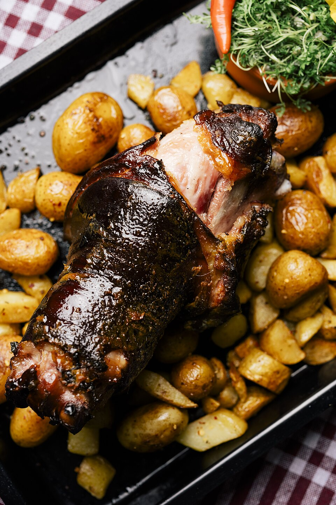

Carnes · Suínos
Pernil à brasileira

Ingredientes
- 1/2 xícara de água
- suco de 3 limões
- 1 colher (sopa) rasa de sal
- 4 dentes de alho amassados
- 1 colher (chá) de pimenta-do-reino
- 1 pernil de porco com cerca de 3 kg
- 2 colheres (sopa) de manteiga
- 1/2 xícara de água ou suco de laranja
- 1/2 colher (sopa) de farinha de trigo
Modo de preparo
- Misture água, suco de limão, sal, alho e pimenta. Esfregue no pernil e deixe marinar por pelo menos 2 horas.
- Preaqueça o forno a 180°C. Coloque o pernil em assadeira, espalhe a manteiga por cima e cubra com papel-alumínio. Asse até quase pronto.
- Retire o alumínio e continue assando para dourar, regando com o caldo da assadeira e completando com água ou suco de laranja se necessário.
- Para o molho: dilua a farinha no caldo da assadeira, leve ao fogo até engrossar levemente. Deixe esfriar carne e molho antes de congelar.
Observação
Farofa combina bem; se tiver linguiça ou miúdos, congele a farofa por até 1 mês. Congelamento: embrulhe o pernil em alumínio e saco plástico; molho em recipiente rígido. Descongelamento: na geladeira de um dia para o outro; reaqueça no forno ou fogo brando.